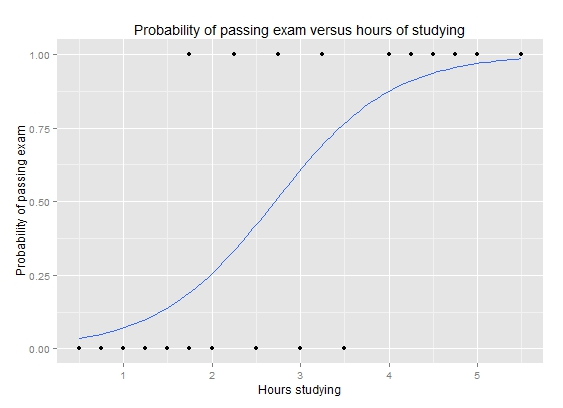

- Volume
- Velocity
- Variety
- (Value)
- (Veracity)
2017-06-13
大數據時代
大數據變革的範例：網路廣告
影音廣告

網站廣告

搜尋廣告
網路廣告應用大數據來對抗傳統媒體

網路廣告應用大數據來對抗傳統媒體
價值：可測量、精準投放
數據的量化


因應數據而產生的商業模式
- Cost-Per-Mille (CPM)
- Cost-Per-Click (CPC)
- Cost-Per-Action (CPA) or Cost-Per-Order (CPO)
因應商業模式而衍生的機器學習需求
- Higher Click-Through Rate(CTR) / Conversion Rate(CVR) ==> Higher Profit
- How to improve CTR/CVR?
- Machine Learning
廣告引擎的四種等級
- Rule Based
- Ad \(\times\) Publisher
- Statistical Modeling
- Deep Learning(?)
引擎升級之路
Volume帶來的挑戰
- 效能問題
效能問題
- 空間、時間
- 記憶體 –> 硬碟
- real time / near real time –> minutes / hours / days
- 細節、細節、細節
- 效能被最差的環節所限制
效能問題 v.s. 資料處理
每個步驟都要優化
- 讀取資料
- 清理資料
- 轉換資料
- 模型建構
- 模型部屬

解決方法
- 更好的程式碼
- 演算法
- 資料結構
- 更多的機器
- 硬體一直在降價
- 容錯
- 協同工作
- 大數據時代的Infrastructure
- 雲端運算
大量數據的機器學習
網路廣告的入門機器學習模型
- Logistic Regression 出自統計學家 David Cox在1958年的文章： Cox (1958)
\[P(y = 1) = \frac{1}{1 + e^{X^T \beta}}\]
- \(y\): 相依變數
- \(X\): 獨立變數
Logistic Regression的範例
Data
| 1 | 2 | 3 | 4 | 5 | 6 | 7 | 8 | 9 | 10 | 11 | 12 | 13 | 14 | 15 | 16 | 17 | 18 | 19 | 20 | |
|---|---|---|---|---|---|---|---|---|---|---|---|---|---|---|---|---|---|---|---|---|
| hour | 0.50 | 0.75 | 1.00 | 1.25 | 1.50 | 1.75 | 1.75 | 2.00 | 2.25 | 2.50 | 2.75 | 3.00 | 3.25 | 3.50 | 4.00 | 4.25 | 4.50 | 4.75 | 5.00 | 5.50 |
| pass | 0.00 | 0.00 | 0.00 | 0.00 | 0.00 | 0.00 | 1.00 | 0.00 | 1.00 | 0.00 | 1.00 | 0.00 | 1.00 | 0.00 | 1.00 | 1.00 | 1.00 | 1.00 | 1.00 | 1.00 |
Model
g <- glm(pass ~ hour, family = "binomial")
| Estimate | Std. Error | z value | Pr(>|z|) | |
|---|---|---|---|---|
| (Intercept) | -4.0777 | 1.7610 | -2.32 | 0.0206 |
| hour | 1.5046 | 0.6287 | 2.39 | 0.0167 |
Logistic Regression的範例

Logistic Regression的範例
統計檢定
| Df | Deviance | Resid. Df | Resid. Dev | Pr(>Chi) | |
|---|---|---|---|---|---|
| NULL | 19 | 27.73 | |||
| hour | 1 | 11.67 | 18 | 16.06 | 0.0006 |
大量數據的挑戰：統計檢定不再有意義
- 大量數據不會影響統計檢定的理論
- 大量數據會放大細節的影響，導致檢定因為「我們不在意的原因」而顯著
大量數據的挑戰：統計檢定不再有意義
set.seed(100); n <- 50; x <- rnorm(n, 0, 10); p <- 1 / (1 + exp(x * 0.01)) y <- runif(n) < p; g <- glm(y ~ x, family = "binomial"); anova(g, test = "Chisq")
## Analysis of Deviance Table ## ## Model: binomial, link: logit ## ## Response: y ## ## Terms added sequentially (first to last) ## ## ## Df Deviance Resid. Df Resid. Dev Pr(>Chi) ## NULL 49 68.994 ## x 1 1.5982 48 67.396 0.2062
大量數據的挑戰：統計檢定不再有意義
set.seed(100); n <- 5000; x <- rnorm(n, 0, 10); p <- 1 / (1 + exp(x * 0.01)) y <- runif(n) < p; g <- glm(y ~ x, family = "binomial"); anova(g, test = "Chisq")
## Analysis of Deviance Table ## ## Model: binomial, link: logit ## ## Response: y ## ## Terms added sequentially (first to last) ## ## ## Df Deviance Resid. Df Resid. Dev Pr(>Chi) ## NULL 4999 6929.1 ## x 1 14.39 4998 6914.7 0.0001486 *** ## --- ## Signif. codes: 0 '***' 0.001 '**' 0.01 '*' 0.05 '.' 0.1 ' ' 1
大量數據的挑戰：統計檢定不再有意義
-
x對y的影響很小 - 小數據量的時候，影響不夠顯著
- 大數據量的時候，檢定很靈敏，所以影響會顯著
數據清理
範例：廣告的原始數據
Impression + Click

Cheap Solution for Small Data

Solution for Large Data
Map Reduce

Feature Extraction
Features of iPinYou Dataset Zhang et al. (2014)
大量的categorical variable
- 在執行機器學習演算法之前，需要把資料轉換為線性代數的矩陣\(X\)
- 由於有大量的categorical variable，所以內建的轉換產生的\(X\)會有大量的欄位
- Ex:
AdvertiserID0001、AdvertiserID0002、AdvertiserID0003…. - Example:
- \(10^9\) instances, \(10^5\) binary features ==> \(10^{14}\) elements
- Requires \(4 \times 10^{14}\) bytes ~ 400 TB
- Ex:
效能問題

… 而且可能還弄不清楚原因

更好的資料結構
- Categorical Variable轉換產生的\(X\)會有大量的0
- Sparse Matrix
- 相同的問題，用Sparse Matrix只需要\(8 \times 10^9\) bytes ~ 8G的空間
心得
- 在大量數據的衝擊之下，我們需要懂更多的計算機概論
- Stistical Modeling \(\times\) Data Structure
大量數據的numerical variable
連續性的假設

- 大量數據會放大細節的影響
克服連續性假設的辦法
splines

binning

Variety 帶來的挑戰
- 大量的Categorical Data，但是他們的出現次數是呈現Exponential Decay
- 增加Machine Learning的難度
Variety 帶來的挑戰
大量的新資料不停的冒出

Numerical Data的新資料
Categorical Data的新資料
## Warning: Removed 1 rows containing non-finite values (stat_boxplot).

新資料帶來的其他問題
Training data的dimension會不一致

Variety引發的效能問題
- \(X\)的Dimension 越大，最佳化算的越慢
效能、效能、效能
效能問題是門檻
- 不夠快時，做效能很有價值(0 –> 1)
- 足夠快時，做效能沒有價值(1 –> 1)
解決效能問題
- Sampling
- Scale
- Scale Up
- Scale Out
- 資料結構
- 演算法
Sampling
Performance v.s. Efficiency Chapelle, Manavoglu, and Rosales (2014)
Scale Up
- Good CPU
- Big Memory
- Make our life easier…
Scale Out
- 在數據量非常大時的可靠解決方案
- 需要維護團隊
演算法
- 一樣的Model、問題，但是不一樣的演算法：
- Batch Optimization
- Stochastic Optimization
Gradient Descent
Batch Optimization
把資料掃過一遍後走一步
Gradient Descent
每處理若干筆資料後走一步
Batch Algorithm
Linear Algebra
Scale Out
\[\left(\begin{array}{c} X_1 \\ X_2 \end{array}\right) v = \left(\begin{array}{c} X_1 v \\ X_2 v \end{array}\right)\]
\[\left(\begin{array}{cc} v_1 & v_2\end{array}\right)\left(\begin{array}{c} X_1 \\ X_2 \end{array}\right) = v_1X_1 + v_2X_2\]
Discussion

MPI with R

MPI with R + Trusted Region Optimization
LIBLINEAR Fan et al. (2008)

Computational Advertising: The Linkedin Way Agarwal (2013)
- Too many data to fit in single machine
- Billons of observations, million of features
- Naive Approach
- Partition the data and run logistic regression for each partition
- Take the mean of the learned coefficients
- ADMM Boyd et al. (2011)
ADMM
- For each nodes, the data and coefficients are different
- \(\sum_{k=1}^K f_k(w^k) + \lambda_2 \left\lVert w \right\rVert_2^2\) subject to \(w^k = w, \forall k\).
- \(w^k_{t+1} = argmin_{w^k} f_k(w^k) + \frac{\rho}{2}\left\lVert w^k - w_t + u^k_t \right\rVert^2_2\)
- \(w_{t+1} = argmin_{w} \lambda_2 \left\lVert w \right\rVert_2^2 + \frac{\rho}{2} \sum_{k=1}^K \left\lVert w^k_{t+1} - w + u^k_t \right\rVert^2_2\)
- \(u^k_{t+1} = u^k_t + w^k_{t+1} - w_{t+1}\)
Update Coefficient
Update Regularization
Stochastic Gradient Descent(SGD)
Basic SGD
- \(w_{t+1} = w_t - \eta \nabla f(w_t | y_t, x_t)\)
- \(\eta\) is important tuning parameter
- \(x_t, y_t\) should be shuffled
An Overview of Gradient Descent Optimization Algorithms Ruder (2016)
- Momentum
- Nesterov accelerated gradient
- Adagrad
- Adadelta
- RMSprop
- Adam
An Overview of Gradient Descent Optimization Algorithms


Follow The Proximal Regularized Leader McMahan (2011)
- Easy implementation
- Good convergence rate when the model space is a cube
- For categorical variables
Learning Rate Schema Comparison He et al. (2014)
FTPRL v.s. TRON
Batch + Stochastic
- All gradient descent based method will be improved by warm start
Variety 帶來的挑戰
- How about new features?
How to Predict with Missing Data?
\[X^T \beta = \beta_0 + x_1 \beta_1 + ... + x_p \beta_p\]
Why Intercept \(\beta_0\) ?
- 為了能夠與Null Model（用
mean(y)猜測y）比較- Machine Learning中的Bias Term
- 讓整體的預測平均值不會偏移
- 當\(x\)全為0的時候，預測值就會是\(\beta_0\)
Dummy Variable in R(Statistics)
model.matrix(~ Species, data = iris[c(1,51,101),])
## (Intercept) Speciesversicolor Speciesvirginica ## 1 1 0 0 ## 51 1 1 0 ## 101 1 0 1 ## attr(,"assign") ## [1] 0 1 1 ## attr(,"contrasts") ## attr(,"contrasts")$Species ## [1] "contr.treatment"
- Intercept 會是某個類別的值
我的心得分享
- 搭配\(L_2\) Regularization
- \(Loglik(y | X, \beta ) + \sum_{k=1}^p \beta_p^2\)
- 把Intercept留給Missing Data
model.matrix(~ Species, data = iris[c(1, 51, 101),], contrasts.arg = list(Species = diag(1, 3)))
## (Intercept) Species1 Species2 Species3 ## 1 1 1 0 0 ## 51 1 0 1 0 ## 101 1 0 0 1 ## attr(,"assign") ## [1] 0 1 1 1 ## attr(,"contrasts") ## attr(,"contrasts")$Species ## [,1] [,2] [,3] ## setosa 1 0 0 ## versicolor 0 1 0 ## virginica 0 0 1
Variety帶來的挑戰：不一致資料欄位
## (Intercept) ## 1 ## Domain106d8accaa76ce939ac11275298402df ## 0 ## Domain10a46a93ff1c8a4119d3df19f59ba98b ## 0
## (Intercept) ## 1 ## Domain1189bb9c0fe06c8c0adcc97e163687aa ## 0 ## Domain11cc7a7aa6b8b660071615779378f492 ## 0
Variety帶來的挑戰：不一致資料欄位
- 事先掃描資料建立整體的全貌
- 用
dictionary概念的資料結構實做模型 - Feature Hashing Trick
Feature Hashing for Large Scale Multitask Learning Weinberger et al. (2009)
Categorical Variable ==> Dummy Variable 需要的只是類別到整數的對應
## (Intercept) Speciessetosa Speciesversicolor Speciesvirginica ## 1 1 1 0 0 ## 51 1 0 1 0 ## 101 1 0 0 1
-
setosa–> 2 -
versicolor–> 3 -
virginica–> 4 - 傳統的對應方法需要global information
Feature Hashing Trick
利用Hash Function建構類別到整數的對應
Feature Hashing Trick
ipinyou.train$Domain[167]
## [1] "32891a14f72e4f88451e349ed095ba41"
hashed.model.matrix(~ Domain, ipinyou.train, hash.size = 2^4)[167,]
## 1 2 3 4 5 6 7 8 9 10 11 12 13 14 15 16 ## 1 0 0 0 0 0 0 0 0 1 0 0 0 0 0 0
ipinyou.test$Domain[1]
## [1] "32891a14f72e4f88451e349ed095ba41"
hashed.model.matrix(~ Domain, ipinyou.test, hash.size = 2^4)[1,]
## 1 2 3 4 5 6 7 8 9 10 11 12 13 14 15 16 ## 1 0 0 0 0 0 0 0 0 1 0 0 0 0 0 0
After Logistic Regression
一開始，大家會卡效能問題
- 用簡單的演算法 + 大量的資料
效能問題解決了，大家就開始做怪了
\[P(y = 1 | X, \beta) = \frac{1}{(1 + e^{X^T\beta})}\]
- \(X^T \beta = \beta_0 + \sum_{j=1}^p \beta_j x_j\)
- \(\beta_j \in \mathbb{R}\)
- Number of variables: \(p + 1\)
libFM
Rendle (2012)
\[\sum_{j_1=1}^p \sum_{j_2=j_1+1}^p (\beta_{j_1}^T \beta_{j_2}) x_{j_1} x_{j_2}\]
- \(\beta_{i} \in \mathbb{R}^k\)
- Number of variables: \(p \times k\)
libFFM
Juan et al. (2016)
\[\sum_{j_1=1}^p \sum_{j_2=j_1+1}^p (\beta_{j_1,f_2}^T \beta_{j_2,f_1}) x_{j_1} x_{j_2}\]
- \(\beta_{j,f} \in \mathbb{R}^k\)
- \(f_1\) is the field of \(j_1\), \(f_2\) is the field of \(j_2\)
- If there are \(f\) fields, the number of variables is \(p \times k \times f\)
How about Deep Learning?
- libFFM won more prize than deep learning.
- This is not a problem with image, text or video
Practice Time
實作上，大數據時代的分析有不同嗎？
- 其實沒有不同，該做的事情還是要做
- 一定要處理Overfitting：
- Regularization
- Cross-Validation
- Dropout(?)
參數變多了怎麼辦？
- Grid Search
- Manual Search
Bergstra and Bengio (2012)
- Random Search
Random Search
Random Search
What I Learned from Kaggler
Source: https://www.slideshare.net/markpeng/general-tips-for-participating-kaggle-competitions
- Random Search
- Several Models (The same algorithm with different parameters)
- Ensemble Learning
Ensemble Learning
Ensemble Learning
Ensemble Learning
Stacked Generalization
- Out-of-fold prediction
- Logistic Regression
如何用R實作呢？
Reference
Agarwal, Deepak. 2013. “Computational Advertising: The Linkedin Way.” In Proceedings of the 22Nd Acm International Conference on Information & Knowledge Management, 1585–1586. CIKM ’13. New York, NY, USA: ACM. doi:10.1145/2505515.2514690. http://doi.acm.org/10.1145/2505515.2514690.
Bergstra, James, and Yoshua Bengio. 2012. “Random Search for Hyper-Parameter Optimization.” J. Mach. Learn. Res. 13 (February): 281–305. http://dl.acm.org/citation.cfm?id=2188385.2188395.
Boyd, Stephen, Neal Parikh, Eric Chu, Borja Peleato, and Jonathan Eckstein. 2011. “Distributed Optimization and Statistical Learning via the Alternating Direction Method of Multipliers.” Found. Trends Mach. Learn. 3 (1) (January): 1–122. doi:10.1561/2200000016. http://dx.doi.org/10.1561/2200000016.
Chapelle, Olivier, Eren Manavoglu, and Romer Rosales. 2014. “Simple and Scalable Response Prediction for Display Advertising.” ACM Trans. Intell. Syst. Technol. 5 (4) (December): 61:1–61:34. doi:10.1145/2532128. http://doi.acm.org/10.1145/2532128.
Cox, David R. 1958. “The regression analysis of binary sequences (with discussion).” J Roy Stat Soc B 20: 215–242.
Fan, Rong-En, Kai-Wei Chang, Cho-Jui Hsieh, Xiang-Rui Wang, and Chih-Jen Lin. 2008. “LIBLINEAR: A Library for Large Linear Classification.” Journal of Machine Learning Research 9: 1871–1874.
He, Xinran, Junfeng Pan, Ou Jin, Tianbing Xu, Bo Liu, Tao Xu, Yanxin Shi, et al. 2014. “Practical Lessons from Predicting Clicks on Ads at Facebook.” In Proceedings of the Eighth International Workshop on Data Mining for Online Advertising, 5:1–5:9. ADKDD’14. New York, NY, USA: ACM. doi:10.1145/2648584.2648589. http://doi.acm.org/10.1145/2648584.2648589.
Juan, Yuchin, Yong Zhuang, Wei-Sheng Chin, and Chih-Jen Lin. 2016. “Field-Aware Factorization Machines for Ctr Prediction.” In Proceedings of the 10th Acm Conference on Recommender Systems, 43–50. RecSys ’16. New York, NY, USA: ACM. doi:10.1145/2959100.2959134. http://doi.acm.org/10.1145/2959100.2959134.
McMahan, H. Brendan. 2011. “Follow-the-Regularized-Leader and Mirror Descent: Equivalence Theorems and L1 Regularization.” In Proceedings of the 14th International Conference on Artificial Intelligence and Statistics (Aistats).
Rendle, Steffen. 2012. “Factorization Machines with libFM.” ACM Trans. Intell. Syst. Technol. 3 (3) (May): 57:1–57:22.
Ruder, Sebastian. 2016. “An Overview of Gradient Descent Optimization Algorithms.” CoRR abs/1609.04747. http://arxiv.org/abs/1609.04747.
Weinberger, Kilian, Anirban Dasgupta, John Langford, Alex Smola, and Josh Attenberg. 2009. “Feature Hashing for Large Scale Multitask Learning.” In Proceedings of the 26th Annual International Conference on Machine Learning, 1113–1120. ICML ’09. New York, NY, USA: ACM. doi:10.1145/1553374.1553516. http://doi.acm.org/10.1145/1553374.1553516.
Zhang, Weinan, Shuai Yuan, Jun Wang, and Xuehua Shen. 2014. “Real-Time Bidding Benchmarking with iPinYou Dataset.” arXiv Preprint arXiv:1407.7073.